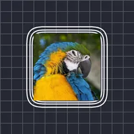

Contourlijnen

Tekent contourringen rond de ondoorzichtige delen van de laag, voor gestapelde sticker- of neoncontouren.
Instellingen
| Instelling | Type | Bereik | Standaard |
|---|---|---|---|
| Kleur | Kleur | – | #FFFFFF |
| Naar buiten | Getal | 1 tot 300 | 20 |
| Breedte | Getal | 0 tot 100 | 3 |
| Alfa | Getal | 0% tot 100% | 100% |
| Vulling | Getal | 0% tot 100% | 100% |
| Aantal | Getal | 1 tot 10 | 1 |
| Fase | Getal | -999 tot 999 | 0 |
| Spreiding | Keuze | Vervaging, Afstand | Vervaging |
| Verschuiving | Getal | 0 tot 2000 | 0 |